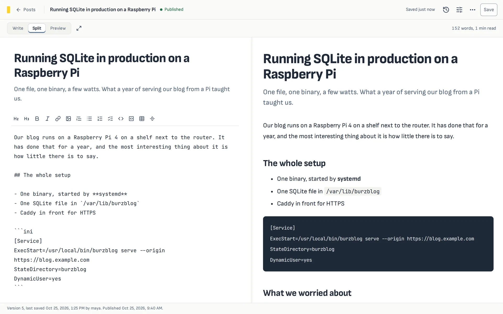
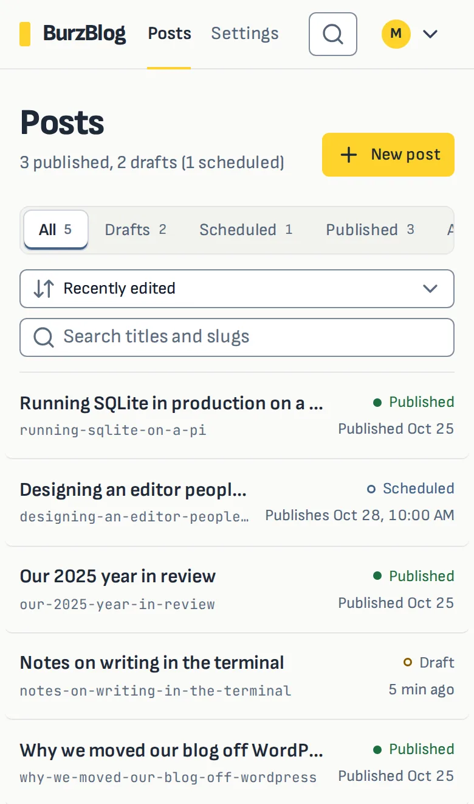

Write posts in the browser, or in your own editor
BurzBlog is a small, self-hosted place to write a blog. One Go binary runs the server, the browser panel and the terminal client. Posts are Markdown in one SQLite file, and your website picks up the published ones when it builds.
Open source under Apache-2.0. Builds for Linux, Raspberry Pi, macOS and Windows.

$ EDITOR="code --wait" burzblog edit running-sqlite-on-a-pi ✓ Saved running-sqlite-on-a-pi (version 6, published). $ burzblog open running-sqlite-on-a-pi # opens the same post in the browser panel
Two ways to write, one post
Some people like a form with a preview. Some never leave their editor. BurzBlog gives both the same post, with the same versions, so a team can mix them.
In the browser
- A split editor: Markdown on one side, the post as readers will see it on the other.
- History of every save, with what changed and a one-click restore.
- Schedule a draft and it publishes itself at that time.
- Search, filters, keyboard shortcuts and a Ctrl K command palette.
- Light and dark themes, and a layout that works on a phone.

From the terminal
burzblog edit opens a post in $EDITOR as a normal Markdown file with
frontmatter and saves it back when you close it. Vim, Emacs, VS Code, anything with a wait flag.
$ burzblog login https://blog.example.com $ burzblog new "Terminal notes" $ burzblog list --status draft $ burzblog pull terminal-notes # edit terminal-notes.md with any tool $ burzblog push terminal-notes.md $ burzblog schedule terminal-notes "2026-11-02 09:00"
Signing in creates a token for that computer, listed in the panel's settings where you can revoke it.
Plain http:// is refused except on localhost.
Nothing is overwritten without asking
Every post has a version, and every save says which version it started from. If someone else saved in the meantime, the save is refused and you choose what to keep.
$ burzblog push running-sqlite-on-a-pi.md error: running-sqlite-on-a-pi changed on the server since you pulled it, so nothing was overwritten. Compare with `burzblog pull running-sqlite-on-a-pi -o -`, then push again with --force to replace it
The browser panel says who saved first, shows the differences line by line and lets you keep yours or theirs. Unsaved browser work is kept in the browser until you save it, and replaced versions stay in the history, so any of them can be restored.
How a post reaches your website
BurzBlog does not serve your blog. Your static site keeps doing that, and downloads posts while it builds.
-
Write and publish
In the panel or the terminal. Drafts and archived posts never leave the server.
-
Your build downloads the posts
With a read-only build token, as one
<slug>.mdper published post, in the frontmatter shape Nuxt Content and other static site generators read. -
The site rebuilds itself
Give BurzBlog a deploy hook, for example from Vercel, and it asks for a rebuild a few seconds after you publish. Several saves in a row cause one rebuild.
# in your site's build $ curl -fsSL -H "Authorization: Bearer $BURZBLOG_TOKEN" \ https://blog.example.com/api/export.tar.gz | tar -xz -C content/blog
Scripts and AI agents can drive it too
Add --json to any command for one JSON document on standard output and JSON errors on
standard error. Nothing prompts or opens an editor without a terminal.
| 0 | Done |
|---|---|
| 2 | Wrong usage |
| 3 | Someone else saved first |
| 4 | No such post |
| 5 | Not signed in |
| 6 | The content is invalid |
$ export BURZBLOG_SERVER=https://blog.example.com $ export BURZBLOG_TOKEN=bzb_... $ generate-notes | burzblog new "Release notes" \ --body-file - --json {"slug":"release-notes","status":"draft","version":2,...} $ burzblog publish release-notes --json \ || echo "failed with exit code $?"
The same version check applies, so an agent cannot quietly overwrite a person's edits. A safe edit loop for agents
Small enough for a Raspberry Pi
One binary with the panel inside and one database file. Run it under systemd behind Caddy or nginx, on a Pi or any Linux host. A container image is optional.
burzblog backupdownloads every post as Markdown files, drafts included.- Passwords are hashed with Argon2id; browser changes need the right origin and a CSRF token.
- Upgrading is replacing one file and restarting the service.
$ sudo systemctl enable --now burzblog $ sudo -u burzblog burzblog user add maya \ --data /var/lib/burzblog Password: $ curl -s localhost:8080/healthz {"status":"ok","version":"v2.0.0"}
Not included yet
BurzBlog is deliberately small. Today it does not have:
- Image and video uploads. Use hosted image URLs; the editor inserts them for you.
- Roles and permissions. Every account can do everything, so give accounts to people you trust.
- A public blog theme. Your own site renders the posts.
Install
One file, nothing else to install. The same binary is the server and the terminal client.
| Computer | File |
|---|---|
| Linux (Intel/AMD) | linux-amd64 |
| Raspberry Pi 4/5, Linux ARM 64-bit | linux-arm64 |
| Raspberry Pi, 32-bit OS | linux-arm |
| macOS, Apple silicon | darwin-arm64 |
| macOS, Intel | darwin-amd64 |
| Windows | windows-amd64.exe |
Check a download against SHA256SUMS-v2.0.0. Older and newer versions are on the releases page.
# Linux and macOS: put it on your PATH $ chmod +x burzblog-v2.0.0-linux-amd64 $ sudo mv burzblog-v2.0.0-linux-amd64 /usr/local/bin/burzblog # on the server $ burzblog user add maya $ burzblog serve --origin https://blog.example.com # on your computer $ burzblog login https://blog.example.com
On macOS, run xattr -d com.apple.quarantine /usr/local/bin/burzblog once if it refuses to
open. With Go 1.27 you can build from source with task build.